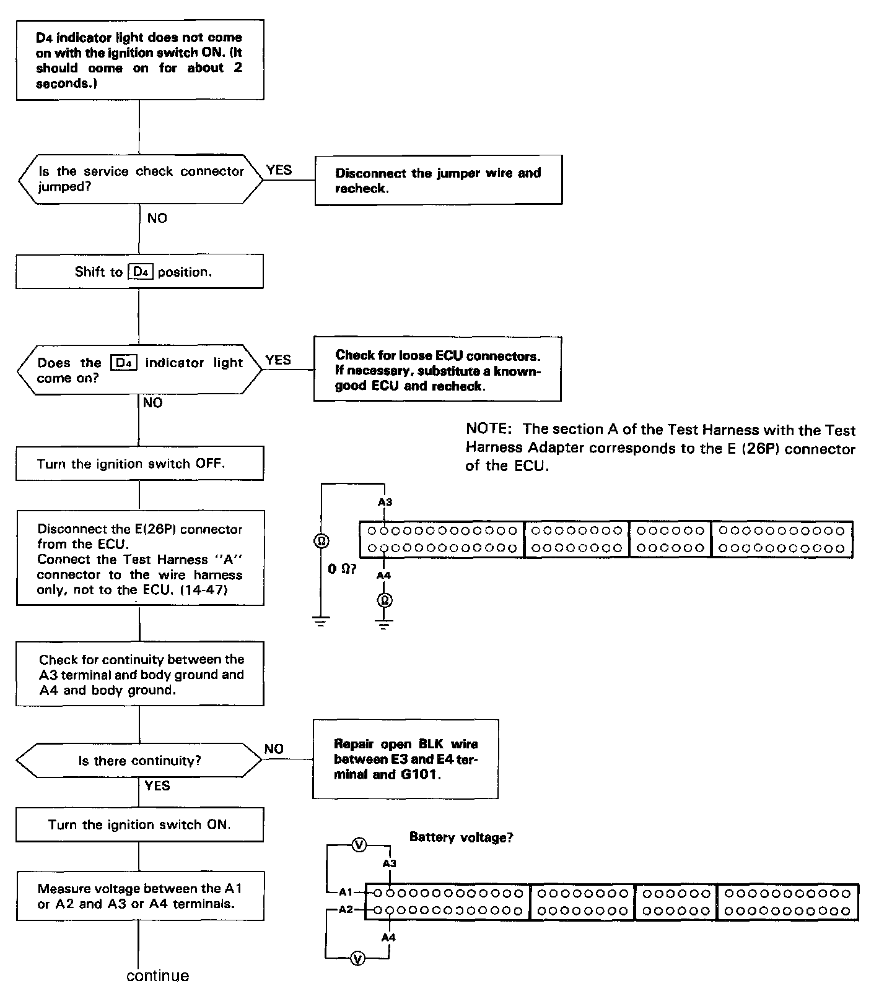
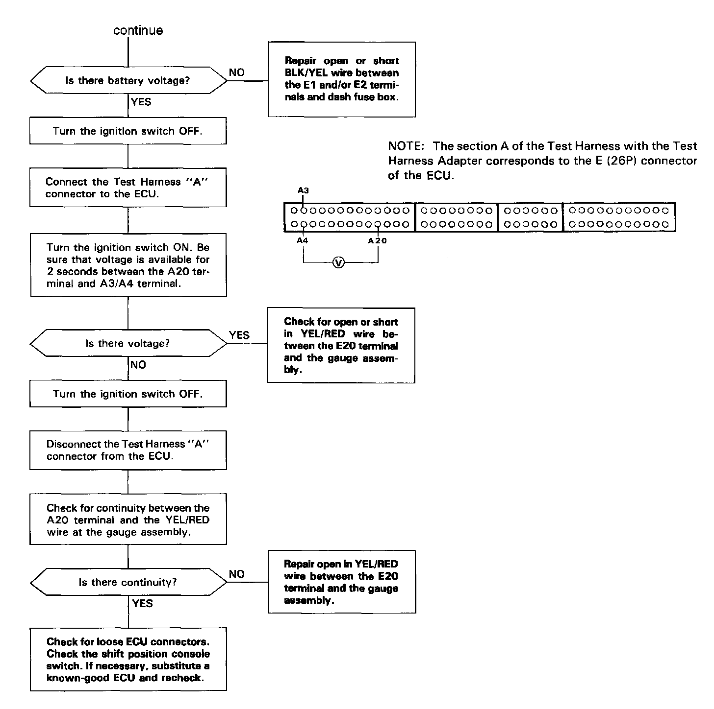

Operation CHARM
: Car repair manuals for everyone.
Home
>>
Acura
>>
1991
>>
Legend Sedan V6-3206cc 3.2L SOHC FI
>>
Repair and Diagnosis
>>
Powertrain Management
>>
Transmission Control Systems
>>
Testing and Inspection
>>
Symptom Related Diagnostic Procedures
>>
Indicator Light Does Not Come ON
Indicator Light Does Not Come ON
Part 1 Of 2:

Part 2 Of 2:
